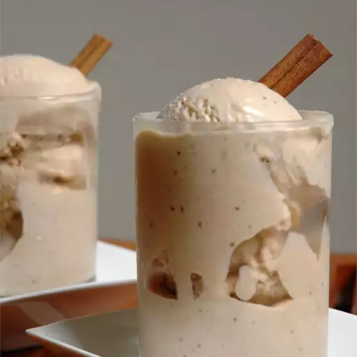

Cinnamon Ice Cream Recipe
Home

Description
This homemade cinnamon ice cream is a delicious frozen treat.
Ingredients
- 2 large eggs
- 1 ½ cups half-and-half cream
- 1 cup white sugar
- 1 cup heavy cream
- 2 teaspoons ground cinnamon
- 1 teaspoon vanilla extract
Instructions
- Whisk eggs together in a bowl.
- Stir half-and-half and sugar together in a saucepan over medium-low
heat until mixture begins to simmer. Remove from the heat.
- Pour 1/2 of the hot mixture into the eggs, whisking quickly to avoid
scrambling the eggs. Pour the mixture back into the saucepan and whisk
in heavy cream. Continue cooking over medium-low heat, whisking constantly,
until thick enough to coat the back of a metal spoon. Remove from the heat,
and whisk in cinnamon and vanilla. Set aside to cool, about 30 minutes.
- Pour mixture into an ice cream maker and freeze according to manufacturer's
instructions, about 20 minutes. Transfer to an airtight container and freeze
until firm or desired consistency, about 2 to 4 hours.